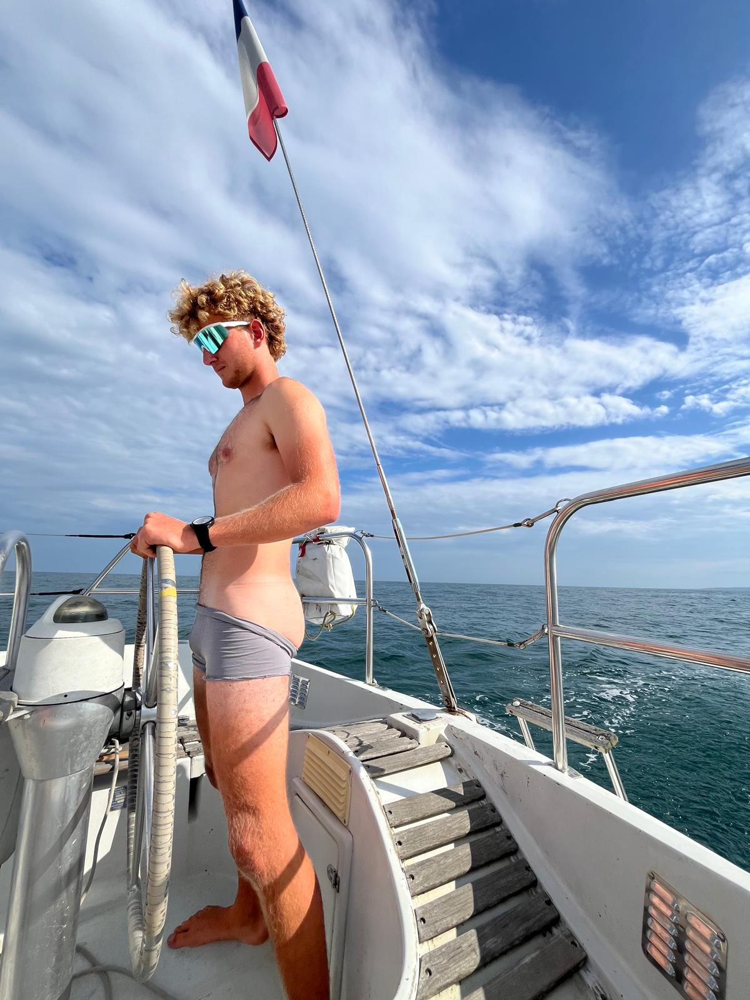

Pilote
Théophile Leluan
Prof de voile et conducteur hors pair, Théophile ne quitte jamais ses lunettes de vitesse, même sur les pistes du désert. Étudiant à l'EPF comme Antoine, il est très engagé dans l'école et dans son travail. Toujours partant pour passer un nouveau permis, il a d'abord décroché le permis bateau, avant le permis moteur — la suite logique avant de prendre le volant de la 4L jusqu'à Marrakech.